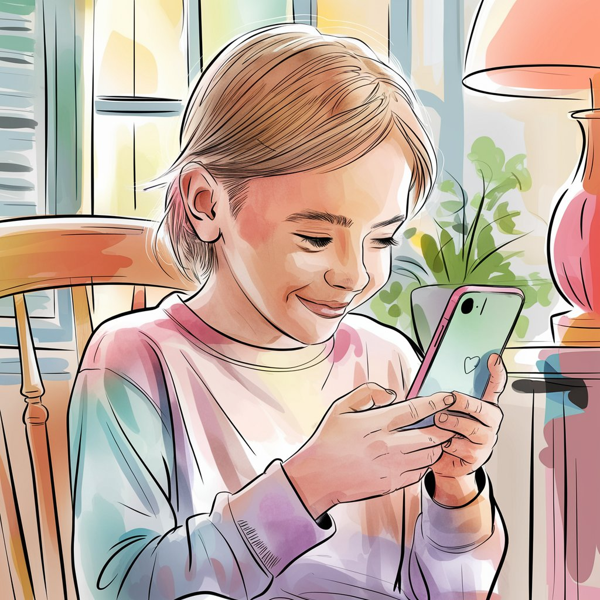
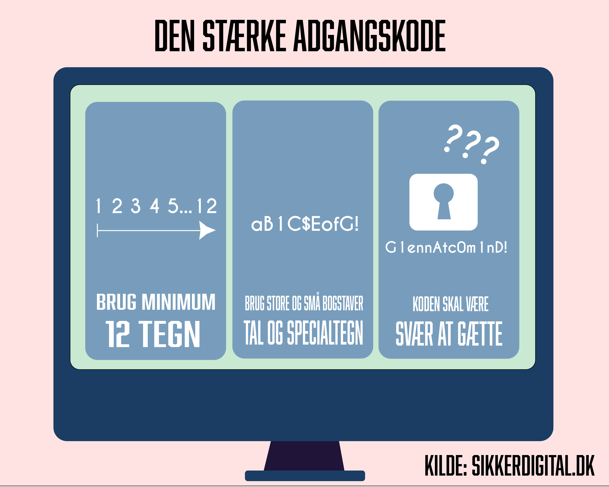
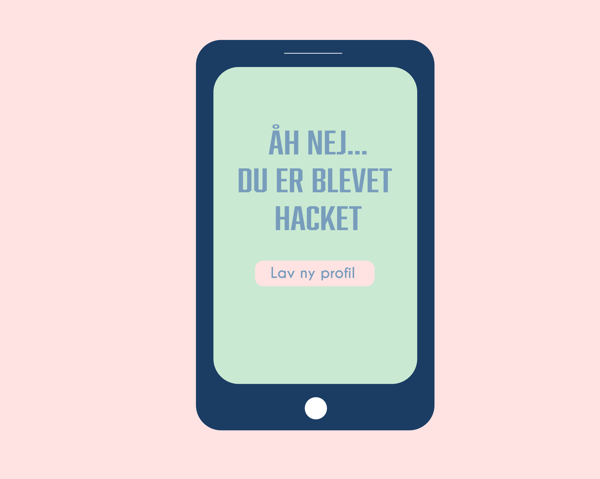
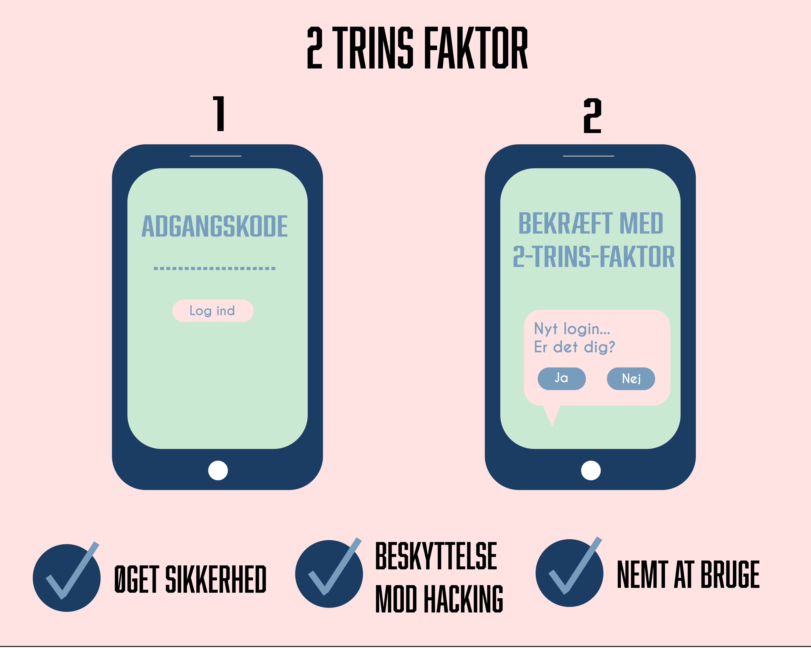
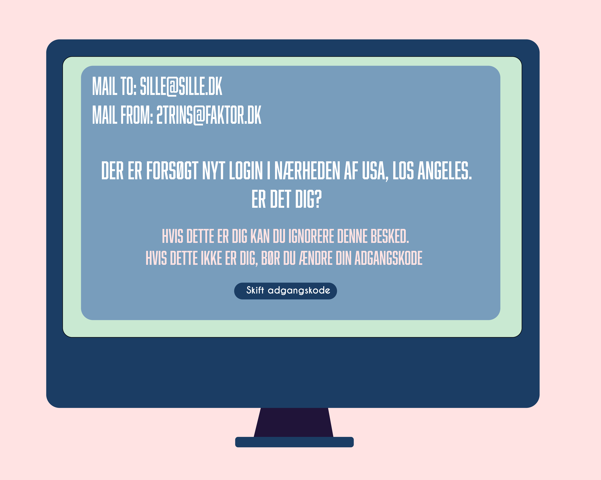

Er du klar til at lære om sikker brug af sociale medier?
Sille er 13 år gammel, og har netop lige fået lov til at få sociale medier. Men hvordan sætter man hendes profiler op så de er så sikre som overhoved muligt? Det vil du lære nu.
Du skal igennem 2 emner: password og to-trins-faktor. Er du klar?

Hvilken adgangskode vælger du til Sille som den sikreste?

Godt valg! Den kode er nemlig den mest sikre, fordi den blander uforudsigelighed, tal, specialtegn og veksler mellem store og små bogstaver.
Argh er du helt sikker på det?
Åh nej, den kode er ikke sikker. Silles profil er blevet hacket og du er ikke lykkedes med at lave en sikker profil...

Du mangler nu kun et sidste step for at færdiggøre Silles profil. Vælger du at bruge to-trins-faktor?

Super, nu har du opsat den sikreste profil til Sille, og hun kan nu roligt begynde at bruge sociale medier.
Din profil er nu dannet og Sille kan bruge sine sociale medier, uden to-trins-faktor
3 måneder senere kan Sille pludselig ikke komme ind på sin profil. Hendes kontaktoplysninger er blevet ændret og fordi hun ikke havde to-trins-faktor, var der intet der stoppede hackeren fra at knække hendes kodeord og overtage hendes profil...
Du har desværre ikke fået lavet en sikker nok profil...
3 måneder senere modtager Sille en mail omkring mistænkeligt login på hendes profil. Hun skynder sig at vise det til jer, hendes mor og far, og sammen får i ændret adgangskoden, så hende profil igen er sikker.
Du har nu den rette viden for sikker opsætning af profiler på sociale medier - godt gået!
